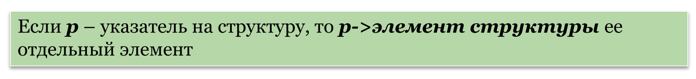
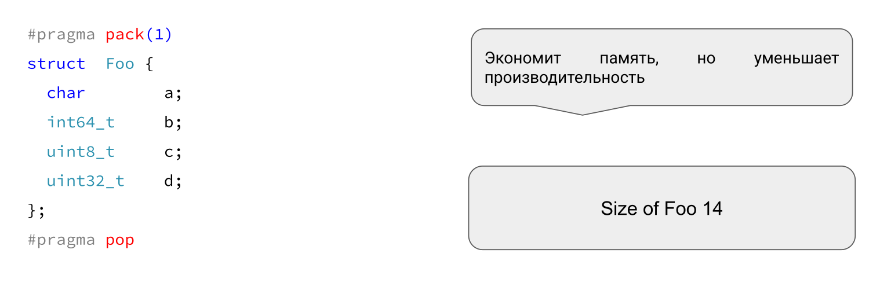
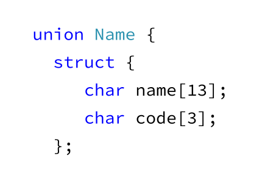

Структуры, объединения и измерение производительности
Теория, примеры и иллюстрации по теме.
Структуры, объединения
Структура
ОПР: это одна или несколько переменных (возможно, различных типов), которые для удобства работы с ними сгруппированы под одним именем.
#include <iostream>
struct Key{
int key1 = 100872;
int key2 = 26823;
};
int main() {
Key data;
std::cout << data.key1;
return 0;
}c оператором . можно обращаться к переменным
Неименованная структура, позволяет обращаться к ее полям напрямую
#include <iostream>
struct Key
{
struct {
int key1 = 100872;
int key2 = 26823;
};
};
Key data = {.key1 = 371235721, .key2 = 7667};
int main() {
return 0;
}Операции над структурами
- Копирования
- Присваивания
- Взятие адреса
- Доступ к элементам
Указатель на struct

Выравнивание структур
Выравнивание структур в C++(alignment/padding) - это способ размещения данных в памяти для оптимизации доступа процессора.
struct Example1 {
char a; // 1 байт, адрес кратен 1
int b; // 4 байта, должен быть выровнен по 4
};
// В памяти: [a][ ][ ][ ][b][b][b][b]
// ↑ ↑ ↑ ↑
// a padding (3 байта)
Объединения
- это переменная, которая может содержать (в разные моменты времени) объекты различных типов и размеров. Все требования относительно размеров и выравнивания выполняет компилятор. Объединения позволяют хранить разнородные данные в одной и той же области памяти без включения в программу машинно-зависимой информации

Google Benchmark
Google Benchmark - это библиотека для написания и выполнения бенчмарков (тестов производительности) в C++.